Quick Rig
Overview
Quick Rig is a powerful extension for Auto-Rig Pro that turns rapidly any skeleton+mesh into a full Auto-Rig Pro armature with controllers, including weights preservation, IK-FK generation… Built to comply with the vast majority of character skeletons, even non-standard bones axes.
Add Limbs
First of all, each limb must be added in the limb list.
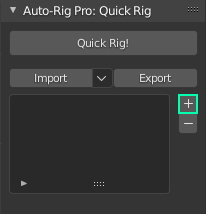
Select the pelvis bone
Click the + button to add a new spine limb
Select a shoulder bone
Clck the + button to add an arm limb
And so on, for each limb
Limbs Definition
Bones are automatically set in the limb definition when adding new limbs. However, the automatic guess may fail depending on the skeleton complexity. It’s recommended to check that each input is correct and modify them if necessary.
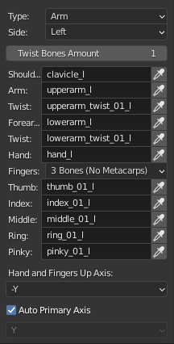
Arms
Twist Bones Amount: Number of twist bones used for the upperarm and forearm bones (e.g. 2 twist bones = 2 upperarm twist bones + 2 forearm twist bones => 4 total)
Shoulder, Arm, Twist…: The name of the bones for each of these type of joint.
Note
The arm, forearm and hand bone are required for the arm limb. Other bones are optional if they don’t exist in the skeleton.
Fingers: Supports 3 or 4 fingers phalanges. 3 means excluding metacarpal bones inside the palm, while 4 includes these bones (except the thumb which is always made of 3 bones)
Hand and Fingers Up Axis: Define which axis is pointing up for the hand and finger bones.
Arms Twist Scheme
How should be filled the Twist 1, Twist 2… entries? Here are details.
The upper arm twist bone is near the shoulder, while the forearm twist bone is near the wrist. This is also the way it works “physically”, if you want you can test it by twisting your own wrist or upper arm. You might say: OK, but the forearm twist is actually twisting while twisting the hand. While the upper arm twist bone is not twisting when twisting the upper arm, then this can be misleading. That’s right, but from a technical standpoint in a character rig, the twist constraints are actually located on the bone near the shoulder, to preserve the shoulder deformation in this area. Then it’s somewhat the other way round, but it works that way. And actually, legs twist bones are built upon the same scheme. Thigh twist bones are near the hips, while calf twist bones are near the ankles. Some rigs are working differently though. But the vast majority are working like explained above.
Here is a typical 1 twist bone arm structure (the same goes for the legs), Quick Rig - Auto-Rig Pro works on that basis:
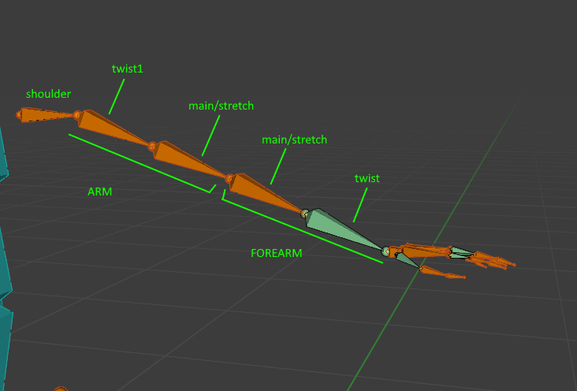
And multiple twist bones:
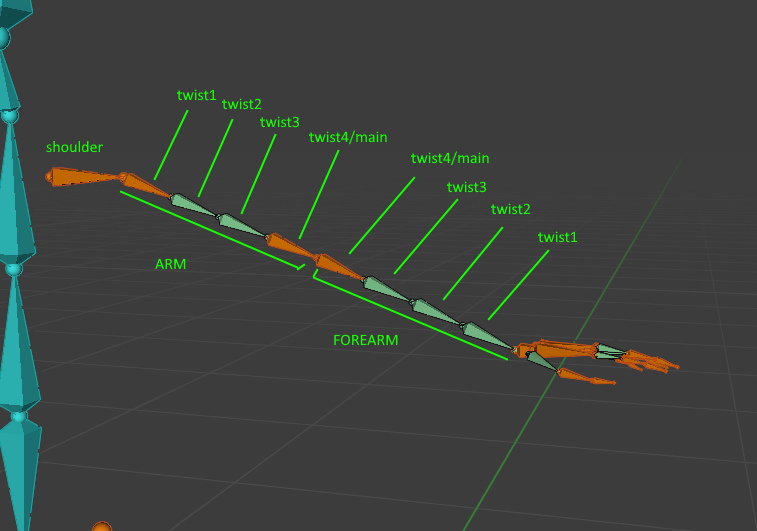
Legs
Twist Bones Amount: Number of twist bones used for the thigh and calf bones (e.g. 2 twist bones = 2 thigh twist bones + 2 calf twist bones => 4 total)
Thigh, Twist, Calf…: The name of the bones for each of these type of joint
Note
The thigh, calf, foot bones are required for the leg limb. Other bones are optional if they don’t exist in the skeleton.
Use World Z: Use the world Z axis coordinates to define the foot axis that is pointing up. If disabled, set it manually with the input below.
Spine
Pelvis, Spine1, Spine2…: The name of the bones for each of these type of joint
Use World Y: The spine bones Z axis will point toward the world Y axis
Connect: The head of a bone should be a the tail position of its parent bone. Recommended, unless it leads to issues with the final rig.
Head
Neck, Neck 2, Head…: The name of the bones for each of these type of joint
Use World Y: Ise the world Y axis coordinates to define the head axis orientation.
Note
Only the head bone is required. Other bones are optional if they don’t exist in the skeleton.
Head Facial
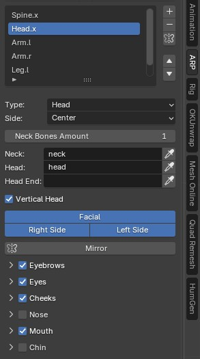
Shape Keys:
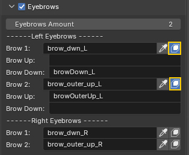
Common Settings
Auto Primary Axis: Automatically find the primary axis of bones. The primary axis is generally the axis pointing toward the child of the bone. If disabled, the axis is defined using the manual input below.
Weights Overrides
If enabled, allows to use another bone weights as weights for the specified bone. Useful for non-standard, complex skeleton that uses unusual weights distribution.
For example, if the arm bone doesn’t deform the mesh with weights, but another child bone of the arm bone does, you may want to use these weights instead. In this case, enable Weights Override, click the new bone icon that popped up next to the bone name in the list, and set the name of the bone that should deform.
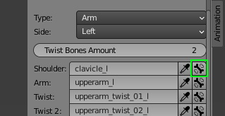
Orphan Bones
Additional bones, called orphan bones, that don’t belong to the limb definition (e.g. a watch around the wrist, eye, nose…) are automatically inserted in the rig hierarchy later when building the final rig.
Generating the Rig
Once all limbs are set in the list, the rig can be generated:
Click Quick Rig!
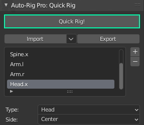
Settings
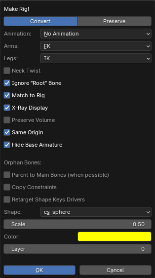
- Convert:
- The base skeleton will be converted to a full Auto-Rig Pro rig, changing meshes vertex groups names, to match Auto-Rig Pro conventions.If enabled, all Auto-Rig Pro editing, and export functions will be compliant with it. This is useful if you don’t plan to preserve the original skeleton, and want to ensure best compatibility with Auto-Rig Pro rigging tools.
- Preserve:
- The base skeleton will be preserved as it is, but bound to the Auto-Rig Pro control rig with constraints. This way, the base skeleton won’t be modified at all. But the control rig is driving it with constraints.If enabled, the Auto-Rig Pro editing and export functions will be locked, since the rig won’t be compliant with Auto-Rig Pro features.This is useful if you don’t plan to edit the rig afterwards, but only wish to add a control rig to the base skeleton for posing/animation, and still export the original skeleton, to Fbx format for example.
- Animation:
- Optionally, bake the existing skeleton animations, to the control rig. See the Multiple Anim… menu to bake multiple animations.In Bake Animation mode, animations are baked with default settings that should fit usual purposes.In Bind Only (Remap) mode, the control rig will only be bound/constrained to the skeleton, in order to bake it later with the Remap tool of Auto-Rig Pro. This way, more settings can be adjusted in the Remap menu before retargetting.
Orphan Bones Locations: Defines if the orphan bones (bones that are not part of any limb definition) should be retargetted using Global or Local space for location coordinates. Global is the default one as it should work best for most cases, but it can be sometimes necessary to switch it to Local.
Arms/Legs: Default values for IK-FK switch of arms and legs
Neck Twist: To enable automatic neck twist rotation when rotating the head
Ignore “Root” Bone: The base skeleton may contain a root bone generally named “root” at the root level of the bones hierarchy. This bone may not be necessary in the rigged armature. To ignore it, enable this setting.
Match to Rig: If enabled, build the final rig with controllers. If disabled, the rig will be left in “Edit Reference Bones” mode, for manual adjustments of the joints positions. “Match to Rig” can be clicked later anytime to complete the rig, in the Auto-Rig Pro main panel.
X-Ray Display: If enabled, controllers and bones will be displayed over the character mesh, so that they will always be visible, even when located inside the character mesh, for easier selection.
Preserve Volume: enable dual quaternion skinning for better volume preservation (typically used to improve arm and leg twist deformation, elbow, knee…). Not recommended when exporting to game engine, they don’t support this type of skinning, then the deformations in game engine would be different from deformations in Blender.
Same Origin: If enabled, the generated control rig origin position will match the base skeleton origin position. It’s useful if the base skeleton is not in the world center but shifted somewhere else. Otherwise when disabled, the origin will always be initialized in the world center (0,0,0).
Hide Base Armature: Hide the base skeleton if enabled, otherwise let it be visible
Orphan Bones:
Parent to Main Bones: Some skeletons may have complex hierarchy, that requires to parent the orphan bones to the main limbs bones, instead of other orphan bones. This is usually not necessary for most skeletons, but sometimes can be required. If some orphan bones have incorrect parents or no parent at all after generating the rig, revert, and try to enable this setting.
Copy Constraints: To copy orphan bones constraints from the base skeleton to the control rig. For example, if a character has a simple facial rig with constraints on it, the constraints will be duplicated as well to the facial control bones, to preserve the facial rig.
Retarget Shape Keys Drivers: If orphan bones transforms values (loc, rot, scale) are used to drive shape keys, these drivers will be transferred to the orphan bones in the control rig as well. For example, if the character has facial shape keys for facial expressions, driven by bones transforms, the facial shape keys will still work with drivers after generating the control rig.
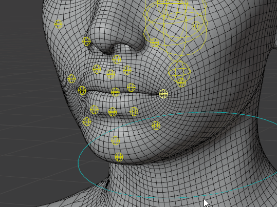
Shapes: Set the custom shape of orphan bone with this shape data
Scale: Set the orphan bone scale
Color: Set the orphan bone’s group color, as drawn in the 3D viewport
Collection/Layer: Add orphan bones to this armature collection (Blender 4+ versions) or layer (older versions)
Presets Import-Export
Mapping presets can be imported and exported as a file, to quickly load them later when using a similar skeleton. The downarrow button allows to import default presets.
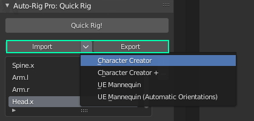
UE Mannequin Import-Export Roundtrip
The UE5 Mannequin skeleton can be imported into Blender as FBX. A control rig can be generated, animated, and the skeleton can be sent back to UE.
Guidelines:
Import the Mannequin FBX into Blender
Load the preset “UE5 Manny (2 Twists, for UE Export)”
Generate only a control rig, using the “Preserve” mode. Leave default settings.
Animate/pose the control rig
Select the original skeleton, select all bones, click “Set Custom Bones” in the ARP: Export tab
Hit “Export FBX” in the ARP:Export tab
Enable “Bake Animations” to export animations
Export